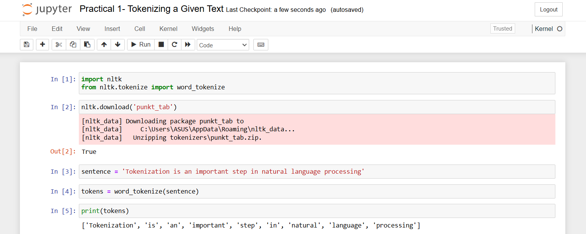
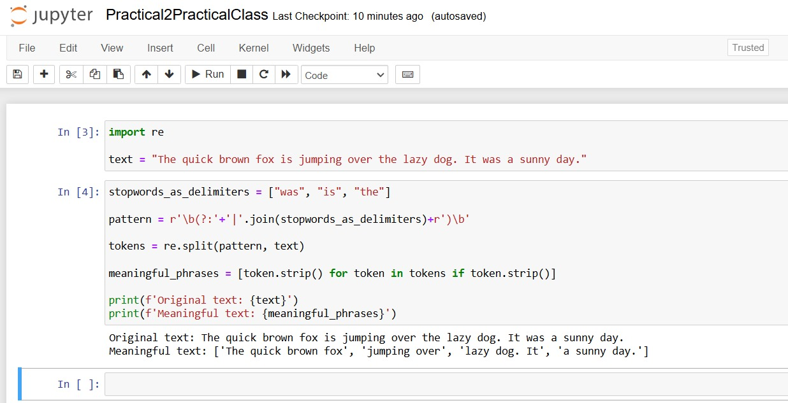
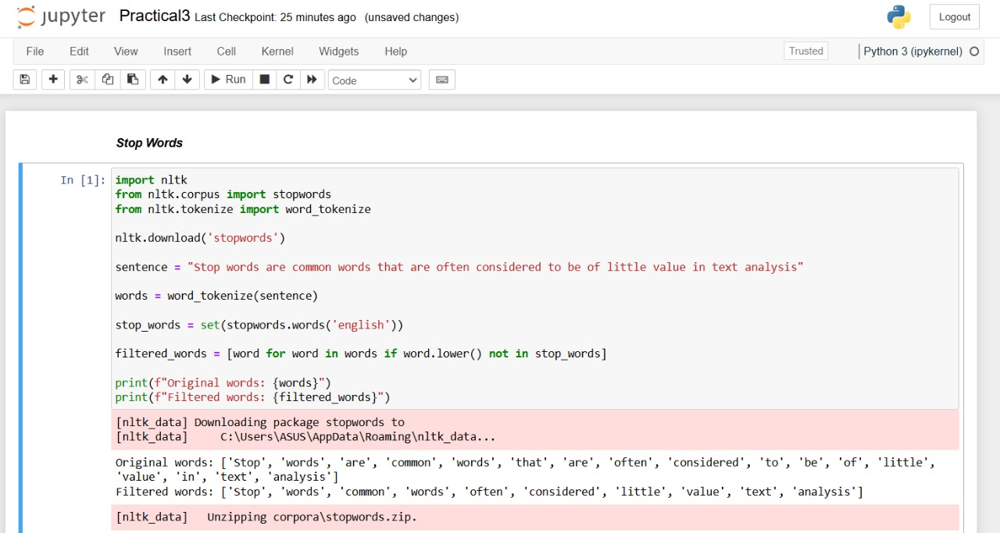

Click here for jupyter notebook links
Natural Language Processing is a branch of Machine Learning that uses human language to communicate with the computers. NLP has a vast number of uses in different fields, e.g.-
NLP has to do three things:-
There are some ways to do NLP:-
Tokenization is the process of breaking down a text into smaller unitsm such as words or sentences. These smaller units are called tokens. Tokenization is a findamental step in natural language processing (NLP) abd text analysis. 
Regular expressions (regex) are powerful patterns used to match, search, and manipulate strings. They are commonly used in programming and text processing for tasks like validation, extraction, and replacement. 
Stop words are common words that are often considered to be of little value in text analysis because they occur frequently in the language and typically do not carry much meaning on their own. Examples of stop words include articles, prepositions, conjunctions, and other common words that are necessary for constructing grammatically correct sentences but may not contribute much to the meaning of the text.
Removing stop words is a common preprocessing step in NLP to improve the efficency of text analysis and reduce the dimensionality of the data. NLTK in Python provides a list of common stop words that can be used for this purpose.
